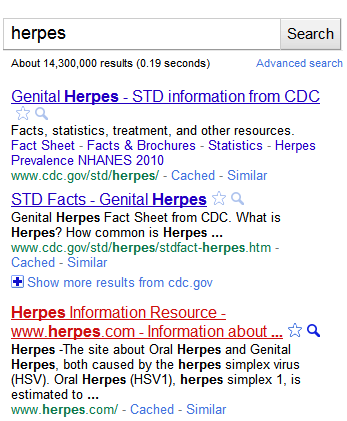
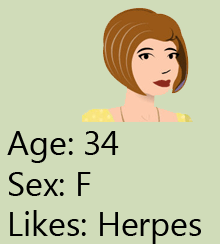
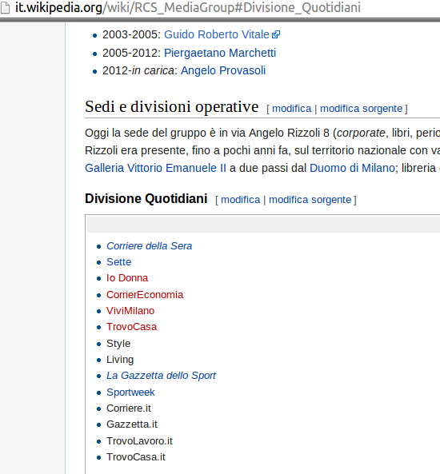

Tracking the users
effects, countermeasures and media responsibility
Claudio Agosti
Hermes Center, GlobaLeaks
Perugia, 2 May 2014
Online users tracking
If you’re not paying for the product, you are the product.
“ The real transaction here isn’t you receiving enjoyment in the form of a free temporary distraction created by a media company at great expense, but rather, that media company renting your eyeballs to its advertisers. ”
When you're connecting to a free service, you think you're interacting with one service only.
Instead, you're connected to many services.
This feeling implies:
- The service is giving us content. If we don't like it, we blame the service.
- We know the server can know our activity, and we can decide to opt-out.
- If the server remember who we are, can give us what we want faster *.
are all the users equals ?
No, you're reaching a service with a specific device and from a specific point in the world.
No, only the first time you navigate in a site you're "like the other anonymous users" (hint: cookie).
What is a cookie ?
“ Cookies are small files which are stored on a user's computer. They are designed to hold a modest amount of data specific to a particular client and website, and can be accessed either by the web server or the client computer. This allows the server to deliver a page tailored to a particular user, or the page itself can contain some script which is aware of the data in the cookie and so is able to carry information from one visit to the website (or related site) to the next. ”You can look/delete/change/enable/disable them
Are we happy about it ?
some people cried "So what if they track me? I'm not that important/I have nothing to hide/they just want to target ads to me and I'd rather have targeted ads over useless ones!"
A new power raise
All the users are important, when profiled.
who has the profiles, can anticipate their future needs
... and twist them, alert someone or choose the answer
Profiling issue
Became mainstream when talking about Search Engines, some business have addressed the issue
The slides below are totally cribbed from donttrack.us ;)When you search Google,
And click on a link,
your search term is usually sent to that site,
along with your browser & computer info,
That's creepy, but who cares about some random site?
Those sites usually have third-party ads,
and those third-parties build profiles about you,
and that's why those ads follow you everywhere.
That's creepy too, but who cares about some herpes ads?
Your profile can also be sold,
and potentially show up in unwanted places,
like higher prices and getting insurance.
But there's more.
Remember your searches?
Google also saves them.
Your saved searches can be legally requested,
and then come back to bite you (happens).
Or a bad Google employee could go snooping (happens)
Or Google could get hacked (happens).
That's why we don't send your searches to other sites.
Or store any personal information at all.
That's our privacy policy in a nutshell.
So don't get tracked when searching.
Use DuckDuckGo instead.
There are more SE privacy preserving
check Prism Break.In the 2009 a new technology has been proposed
Do Not Track (DNT)
“ is rather like expecting a hungry fox to come and babysit some chickens”Wikipedia/DNT
Do Not Track Us
Tracking apparently was just a service abuse/grey area, until...
 "The NSA/GHCQ is using Angry Birds to monitor users!
"The NSA/GHCQ is using Angry Birds to monitor users!
Mobile business
“ And what exactly are these apps doing with all the information they collect from users? Every app is different, but the popular "Angry Birds" app, for example, shares sensitive information with eight entities — four companies that target mobile ads, two mobile ad networks, one analytics site and an ad optimization company.”A business model unrespectful on users privacy, can be abused by Intelligence agencies with few efforts
How ? (technically)
How ? (high level)
- Angry Birds, or other "well know" services/app/software send unencrypted dataversus other countries
- When a foreign connection pass thru, someone intercept and profile them
Bad news: they collect all those information from most of our apps/services. This is not simple user to service relationship
what about online news ?
- ADS banner are injected by third party
- The editor want stats, stats made by tracking agent
- The fancy social!
Test: fetch the content (http://www.repubblica.it)

Here, you get the content from repubblica.it only
but that's quite different from what is commonly seen in a browser! ;)
On three script, I'll enable two of them...
A different website (http://ilpost.it)
(note: by default you got the first)
Is also a performance issue
what happen under the fancy images ?
How I performed this research ?
- choosed 43 Italian random media
- performed connection to the homepage
- monitored all the hidden connections happening
- performed traceroute to all the included hosts
- Geolocalization of the IP involved in the route path
A random image just to talk about traceroute

Graph of inclusions
*.rcs.it ?!
Facts
- Every included script/page/img is coming from a different service
- Most of these service tracks you (third party cookies), among different site
- Every connection contain the URL you're visiting on the media
- Every news URL point to a specific public content
→ Foreign actor can profile your interest also if the content requested is in your Nation!
did you remember NSA Fox Acid ?

To trick targets into visiting a FoxAcid server, the NSA relies on its secret partnerships with US telecoms companies. As part of the Turmoil system, the NSA places secret servers, codenamed Quantum, at key places on the Internet backbone. This placement ensures that they can react faster than other websites can. By exploiting that speed difference, these servers can impersonate a visited website to the target before the legitimate website can respond, thereby tricking the target's browser to visit a Foxacid server.
In the academic literature, these are called "man-in-the-middle" attacks, and have been known to the commercial and academic security communities. More specifically, they are examples of "man-on-the-side" attacks.
...
This presentation thesis
- National sovereignty of users behavior
- Exposition to foreign attacks
Some Geographical output...
www.affaritaliani.it

www.ansa.it
www.corrieredellosport.it

www.diretta.it
www.ilfattoquotidiano.it

www.ilmattino.it
www.ilsole24ore.com
it.reuters.com
www.rai.it
www.adnkronos.com
www.agi.it

www.calcionapoli24.it
Top inclusions
- 33 www.google-analytics.com
- 29 secure-it.imrworldwide.com
- 28 connect.facebook.net
- 27 static.ak.facebook.com
- 27 s-static.ak.facebook.com
- 25 www.facebook.com
- 21 pagead2.googlesyndication.com
- 20 platform.twitter.com
- 19 b.scorecardresearch.com
- 18 static.ak.fbcdn.net
- 18 apis.google.com
- 14 twitter.com
- 14 ssl.gstatic.com
- 14 ajax.googleapis.com
- 13 s0.2mdn.net
- 13 googleads.g.doubleclick.net
- 12 pubads.g.doubleclick.net
- 12 fonts.googleapis.com
- 12 bs.serving-sys.com
- 11 www.googletagservices.com
- 11 rtax.criteo.com
- 11 partner.googleadservices.com
- 11 oauth.googleusercontent.com
- 11 accounts.google.com
- 10 ad.it.doubleclick.net
Just a note...
bs.serving-sys.com
In 43 media, all the countries involved..
- 43 United States
- 43 Italy
- 40 Netherlands
- 40 Germany
- 39 France
- 37 United Kingdom
- 31 Ireland
- 29 Sweden
- 5 Denmark
- 2 Canada
- 1 Switzerland
- 1 Japan
- 1 Czech Republic
- 1 Austria
any help ?
Ghostery
Disconnect
No Script
Script Safe
Ad Block Plus
Thank you
@sniffjoke